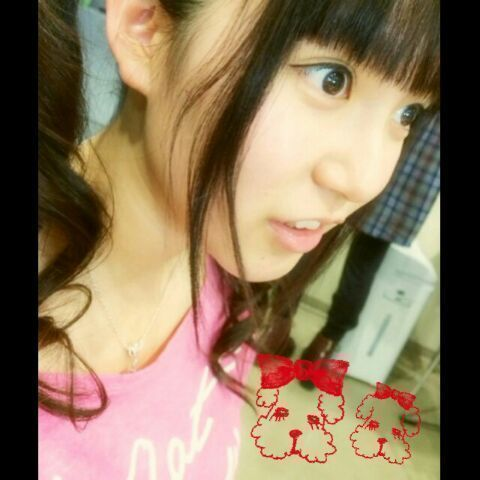
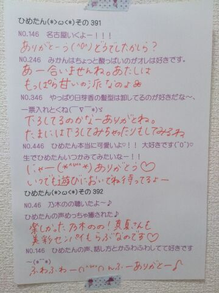

| 2014/04 17 Thu | ひめたん-OoO-その435 |
タイトルちょこっとかえました＼(^O^)／
あの真ん中のやつはひめたんりぼんです
見えない？うそでしょ(蔑んだ目)
さて、今日は記事はこれだけで
メインは質問返しのコーナーです
長らくおやすみしてたからねー
楽しみに待ってたみんなごめんね
むしろ記事なんて興味ないんです
質問返ししか見てないんです
なんて方も最近はいらっしゃるみたいで
いやー嬉しいよ。
嬉しいよ、うん
嬉しいけどさ、
記事も楽しみにしててくれても
いいんじゃないかなーなーんて
ちっちゃい声で呟いてみたりみなかったり。

めんどくせーひめだなほんと(笑)
あ、そうだ
じゃあ今日は久々にみんなに
質問しようかな
今日の質問はこーれ
 ひめたんのこと好き？
じゃあ乃木坂ちゃん以外で
ひめたんのこと好き？
じゃあ乃木坂ちゃん以外で
好きなアーティストさん教えて？
ひめたんにひとこと！
あれ、じゃあの使い方おかしいね
まーいっか
それでは質問返しコーナーいってみよーう
あ、その前に

横顔。

 ひめたんが最近ついた
ひめたんが最近ついた
最大のウソってなんですか？
そういや、ひめたん、ウソつかないんでしたね。。
うそつきませんよひめたん(゜゜)
うそなんてついたことない(゜゜)お
お店でそんな大きいリボンつけてて
恥ずかしくないんですか？
ちっちっち
ひめたんは伊達にりぼんキャラやってないよ！
つるとんたんだから
りぼんして行けないってなんだよ！
だからみなさんにも恥じらいを捨てて
堂々とりぼんして街歩いてほしいです
あわよくば握手会にも
ひめたんの苦手な物ってなにー？
言 い ま せ ん よ？
みなさんが重箱の隅をつつくのが
大好きなことくらい知ってますよ？
これゆったらみんなけちょんけちょんにいじめるんでしょ？そしてにやにやするんでしょ？ひめたんは自ら弱点を晒すほどあほじゃないですよ？いつもおもしろがっていじわるな質問してくる方もいっぱいいるけどひめたんは仕方なく答えてるんであって決して楽しんでるんじゃないよ？実はちょっとノリノリだったりとか絶対にしないんだからね？ちなみに
......ごめんやっぱなんでもないヽ(〃∀〃)ノ
アイスはコーンかカップどっちが好き？
なんてゆーかコーンは飽きちゃって
最後まで食べきらんないんだよね
もし、ひめたんが女の子限定ソロイベントを
開催したら何をするー？
にゃーん楽しそう(＊^ω^＊)
ひめたんのお部屋に1日ご招待イベント！！
ごろごろにゃーにゃしたい
よーし片付けなくっちゃなー
え？いやそうですよ？誤解しないでね
きれいよ、きれいだけど、ちょちょちょっと......ね
ひめたんが好きすぎて朝も起きれません！
どうしたらいい？（夜は眠れます）
いっそ眠り姫にでもなってしまいなさい
なんて冷たいこと言ってみたけど
ほんとは嬉しいよ///んふ
このコメント見てくれてるのか、
分かりませんが
質問返し一回だけでも良いからされて見たい！
見てますよー＼(^O^)／
タイムラグが多少生じたとしても
ちゃんと見てるからねー♪
ひめたんはうさぎ好きなんですか？
ひめたんなのに？
ひめたんは正直とりりーぬさんよりも
うさぎさんの方が好きですよ？だめ？
ひめたんは普段語尾に
「でちゅわ」とかいうんすか？(笑)
さすがに言わんねそれは(´・ω・｀)
あれ、もしかして王国民のみんなは
そーゆーのを求めてるんですかね
仮にちらっとニーズがあったとしても
それはさすがにまずいよねー
ひめたんって絵とてもお上手ですね。（爆笑）
文面越しに
ひめたんのことほくそ笑んでるのが
ひしひしと伝わってきます、ありがとう。
そのおっきい器ひめたんのお風呂？
つるとんたんの写真ね
ちょっとーあなたたちのせいで
ひめたん日記で大喜利やってるって
噂になってるんだからね( `ω´ )
 ひめたんって413歳まで生きるって
ひめたんって413歳まで生きるって
聞いたんだけど本当なの？
むしろもうそろそろ年齢止まりたいよ
むしろもうそろそろ年齢止まりたいよ
むしろもうそろそろ年齢止まりたいよ
今期注目のアニメはなんですか？
僕らはみんな河合荘
一週間フレンズ。
悪魔のリドル
極黒のブリュンヒルデ
ノーゲーム・ノーライフ
いやまだまだ観てる今期結構観てる！
僕が鏡を見ると、
そこにはいつもイケメンが居て
僕の動きのマネをします。彼は一体誰ですか？
鏡のしくみを知らないんだね
かわいそうに(´・ω・｀)
鏡に写った彼女を虚像だと信じたいよ私は。
ひめたんの日記の
コメント欄下２ケタに46を踏んだ方へ
手書きでコメ返するコーナー
＼ ひめたん46 ／

いつもコメントたくさんありがとうございます
この2日間でまた
一気にコメント読みました＼(^O^)／
返すまでに若干時間が
かかってしまっていますが
それでも待っててくれたら嬉しいです＊＊
乃木坂46SHOW! よろしくねーおやすみ！
(＊´・ω・＊)
コメント(655)
2014/04/17 23:36